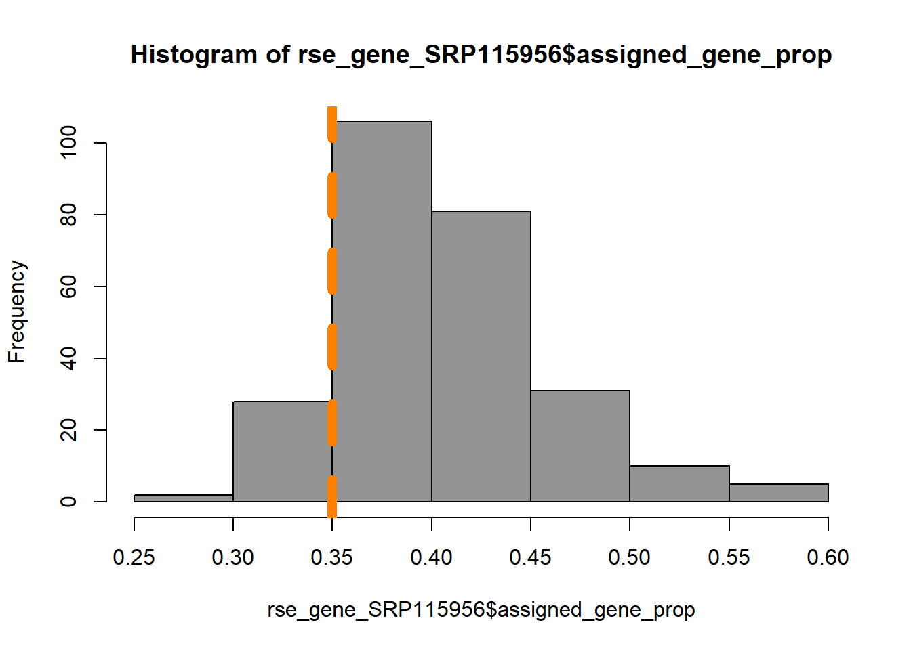

4 Filtrado de los datos.
Calcularemos la proporción de lecturas asignadas a genes.
# Proporción de lecturas asignadas a genes.
rse_gene_SRP115956$assigned_gene_prop <- rse_gene_SRP115956$recount_qc.gene_fc_count_all.assigned/rse_gene_SRP115956$recount_qc.gene_fc_count_all.totalY observamos las estadísticas de la variable categórica age<-group
# Resumen por grupo de edad.
with(colData(rse_gene_SRP115956), tapply(assigned_gene_prop, age_group, summary))## $old
## Min. 1st Qu. Median Mean 3rd Qu. Max.
## 0.3161 0.3710 0.3989 0.4115 0.4469 0.5841
##
## $young
## Min. 1st Qu. Median Mean 3rd Qu. Max.
## 0.2915 0.3688 0.3980 0.4043 0.4307 0.5610Además, resulta útil observar de manera gráfica cómo se comporta la medida de lecturas asignadas a genes.
# Visualización.
with(colData(rse_gene_SRP115956), plot(assigned_gene_prop, sra_attribute.rin))
abline(v=0.35,col="deepskyblue4", lwd=4, lty = "solid")
hist(rse_gene_SRP115956$assigned_gene_prop, col="gray58")
abline(v=0.35,col="darkorange1", lwd=7, lty = "dashed")
Después de haber observado un poco el comportamiento de los datos, podemos elegir un valor de corte.
table(rse_gene_SRP115956$assigned_gene_prop < 0.35)##
## FALSE TRUE
## 233 30Para este estudio, eliminaremos las muestras que tengan una proporción menor a 0.35
# Pero antes podemos guardar el objeto original, por si posteriormente fuera necesario.
rse_gene_SRP115956_unfiltered <- rse_gene_SRP115956
# Eliminar los genes con proporciones bajas.
rse_gene_SRP115956 <- rse_gene_SRP115956[, rse_gene_SRP115956$assigned_gene_prop > 0.35]Ahora calcularemos los niveles medios de expresión de los genes en las muestras y eliminaremos los genes con niveles muy bajos, que no son significativos.
gene_means <- rowMeans(assay(rse_gene_SRP115956, "counts"))
summary(gene_means)## Min. 1st Qu. Median Mean 3rd Qu. Max.
## 0.0 0.2 3.6 397.8 74.8 857870.3# Eliminamos genes poco significativos (abajo del primer cuartil).
rse_gene_SRP115956 <- rse_gene_SRP115956[gene_means > 0.2, ]
# Dimensiones finales.
dim (rse_gene_SRP115956)## [1] 46977 233Las dimensiones originales del objeto eran de 63,856 genes y 263 muestras. Así que después de filtrar los datos eliminamos 16,789 genes y 30 muestras y conservamos el 73.57 de los genes.
# Porcentaje de genes retenidos.
round(nrow(rse_gene_SRP115956) / nrow(rse_gene_SRP115956_unfiltered) * 100, 2)## [1] 73.57